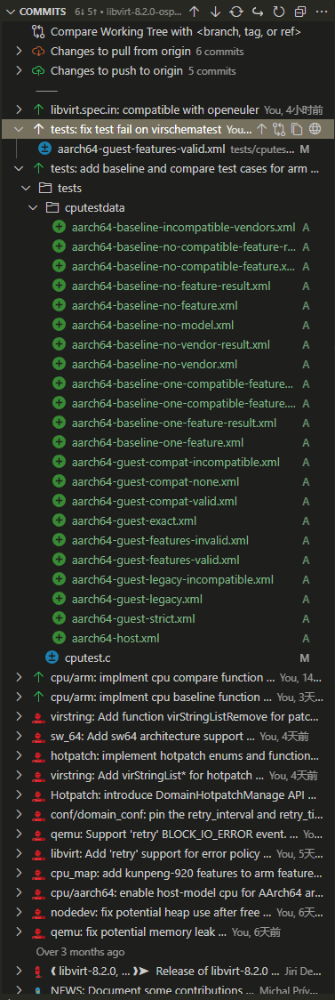
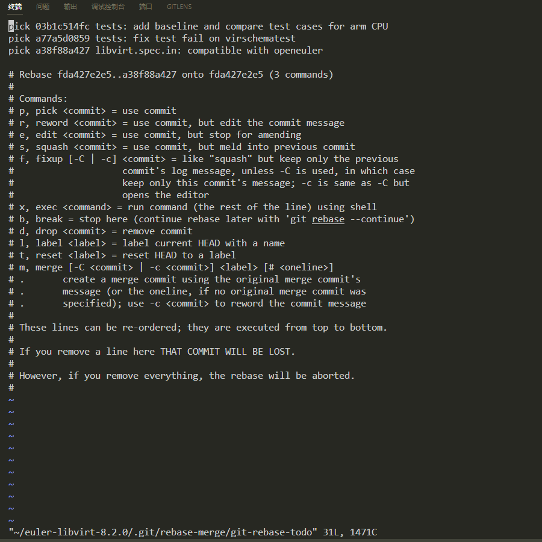
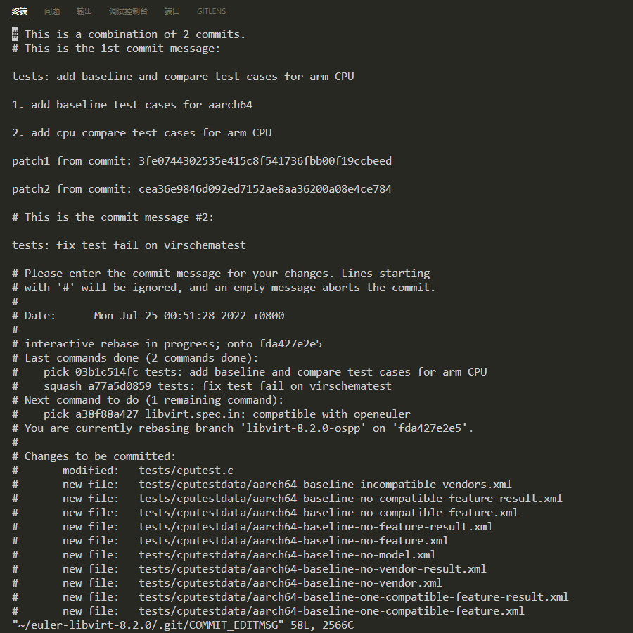

前言
在项目开发的过程中，我们通常会在一个分支上做许多操作，有时候几次commit就为了完成一个小功能点。功能开发完成后，面对凌乱的commit记录，便诞生了合并多个commit的需求。Git当然也考虑到了这种需求，并对此设计了git rebase这个命令，该命令第一次用起来会感觉很复杂，但其实将Git的注释说明都看完并按照指示操作之后，就会觉得这个命令可太好用啦，接下来我以OSPP项目为例，展示如何合并某两次commit。
实操
暂存工作区
进行一切操作之前，记得先暂存当前工作区的改动1
git stash -m "xxx"
分析commit记录
首先是要分析commit记录，判断哪几次commit是需要合并的。如下图所示，在我参与的OSPP项目中，我对tests测试用例文件有着两次commit记录，我需要将这两次commit记录合并为一个。那么，接下来需要做的事情是获得一个“基础坐标”，这个坐标通常是要合并的所有commits更前一次commit，其代表的意思是：我要以此commit为起点，修改后面提交的commit。在本次操作中，这个坐标便是cpu/arm: implement cpu compare function ...，获取这个commit的SHA值并复制。

rebase开启时光穿梭
在上一步中，我们获得了基础坐标的SHA值，接下来使用以下命令，让仓库暂时性地“穿梭”回基础坐标的那一次提交：1
git rebase -i fda427e2e50086248244c57e005484616bfc60b1
此时终端会打开一个文本编辑器，如下图所示，仔细观察可以看到以下几点现象：
- 目前，我们已经穿梭回基础坐标这一次commit上
- 我们可以看到前三行是“未来”的几次提交，每一行每个字段对应的意思是: Git操作、SHA、Commit message
- 看下面的注释，我们有几种操作可以做，默认是
pick操作，也就是原封不动提交回去 - 要达到合并的目的，我们使用
squash操作，根据注释的意思，标记了squash的commit记录会合并到前一个pick的提交中

根据我的需求，我需要将上图中第二行的提交合并到第一行的提交中。因此，我的操作就是将第二行的pick改为squash，然后保存退出。
修改commit信息
在上一步保存退出后，终端会打开第二个文本编辑器，第二个文本编辑器的功能是修改commit信息。在这一步我们需要将两次commit的信息合并起来，如下图所示，由于我第二次commit仅仅是修复一个本不该出现的bug，因此我不打算修改第一次commit的信息，只需要将第二次commit的信息注释掉即可。

修改完成后保存并退出，Git会自动处理剩余的提交，然后重新回到HEAD commit中。
至此，rebase时光穿梭之旅已经结束，再次查看commit log，可以发现改为squash操作的那一次commit已经不见了，因为这一次commit已经被合并了。
推送分支
相同的操作将所有要合并的commit都合并完之后，便可以将当前分支推送到远程分支上：1
git push origin xxx
如果之前已经推送过，则会出现提交记录不一致的情况，再三确认本地分支的修改正确无误后，可以将其强制推送到远程分支上：1
git push -f origin xxx
总结
合并commit的操作大致可以总结为以下几个步骤：
- 分析需要合并的commit，确定rebase的基础坐标
- 使用rebase命令穿梭到基础坐标，修改要合并commit的操作类型
- 修改commit信息（可能需要解决冲突）
Git真厉害！在此推荐个VSCode插件GITLENS，超级厉害！